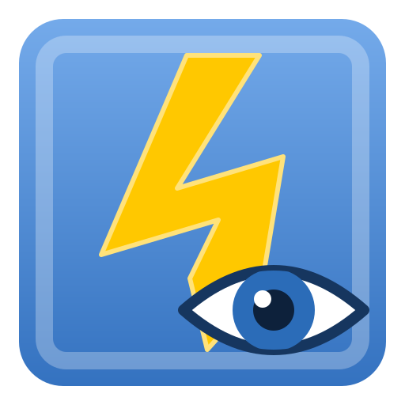

QElectroTech View
Arrasta o ficheiro .qet para aqui
ou

QElectroTech View só leituraArrasta o ficheiro .qet para aqui
ou
Consulta de esquemas QElectroTech
Formato e símbolos © equipa QElectroTech (GPL v2)
Toca ou carrega numa tecla para continuar